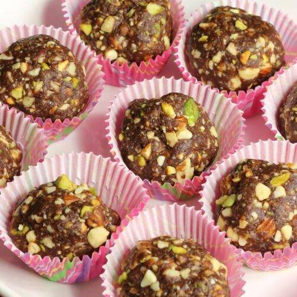

Compiled from an elite tech stack of badam, cashew, peanut, dates, and white sesame seeds, these laddus are essentially high-density storage drives of pure energy. They function as a delicious hardware firewall against low blood sugar, packing maximum data into a tiny, round form factor. Eating one is like running a background optimization script that instantly clears your afternoon fatigue. Just don't look at the caloric source code, or you might trigger a panic exception in your wellness app.